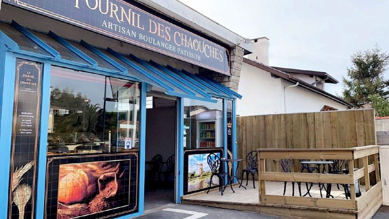

1er prix
Meilleure baguette de tradition des Landes
Deux fois sacrée au concours départemental, en 2022 et en 2024. Pétrie, façonnée et cuite chaque jour au fournil, au 1717 avenue du 11 Novembre à Ondres.
Face aux artisans boulangers de tout le département, la baguette tradition de Pierre-Philippe Merlou est montée sur la plus haute marche. Deux fois.
On fonce goûter cette baguette tradition lauréate […] à la fois moelleuse et croustillante, et on vous met au défi de ne pas vouloir tout goûter.
— ICI Gascogne (Radio France), « Côté saveurs dans les Landes », avril 2022

Formé à Biarritz, passé par Tarbes, Pierre-Philippe Merlou s'installe à Ondres en 2021 avec sa compagne Clothilde et leurs quatre enfants. Ils reprennent la boulangerie de l'avenue du 11 Novembre : le Fournil des Chaouches, du nom des vieilles familles ondraises.
Au fournil, Pierre-Philippe façonne la baguette tradition primée, huit pains spéciaux bio, les tartes, le snacking et un gâteau basque que la radio locale « recommande chaudement ». Au comptoir, Clothilde orchestre tout. Lui le dit sans détour : sans son organisation hors pair, le Fournil ne serait pas à ce niveau.
Et si vous avez cinq minutes, il sortira du fournil pour boire un café avec vous.
La « baguette de tradition française » est une appellation protégée. Au Fournil des Chaouches, on en a fait une fierté.
Farine, eau, sel, levure ou levain. Aucun additif : c'est la règle de l'appellation.
Tout est préparé sur place, à Ondres, par l'artisan et son équipe, chaque jour.
Une tradition ne passe jamais par le congélateur. Elle sort du four et arrive dans vos mains.
Une cuisson franche pour une croûte dorée et croustillante, une mie moelleuse et parfumée.
Choisissez vos produits, votre jour et votre heure de retrait. Votre commande vous attend au comptoir, sans faire la queue.
Anniversaire, communion, mariage, petit-déjeuner d'équipe ou apéritif dînatoire : dites-nous ce dont vous rêvez, on vous rappelle avec une proposition.
« Deux chouettes sourires, du franc parler et un véritable amour de leur métier, c'est la recette miracle […] du Fournil des Chaouches. »
« Pierre-Philippe fait également 8 pains spéciaux bio, des tartes maison, du snacking chaud ou froid et un gâteau basque qu'on vous recommande chaudement. »
« Au Fournil des Chaouches, ils aiment prendre le temps de connaître les gourmands qui poussent les portes de leur boulangerie. »
Sur l'avenue principale d'Ondres, entre Bayonne et Labenne. Une terrasse pour le café, et un accès de plain-pied.